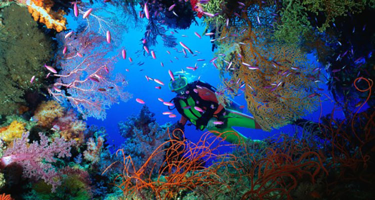
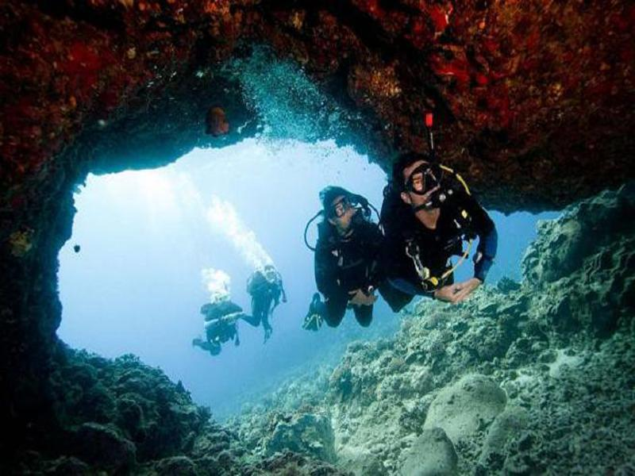
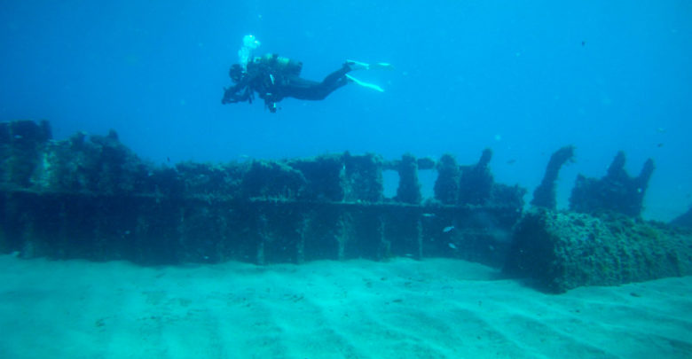

Moo se vuelve submarinista

El submarinismo es un deporte apasionante, imagínate sumergido a muchos metros, en la inmensidad del mar, solos tú, la bombona de oxígeno y la flora y fauna marítima. Explosiones de colores por donde quiera que mires, la naturaleza marina en su máximo explendor... Rodeado de H2O por todos lados y nadando con los animales.
Yo lo he hecho y es la mejor experiencia de mi vida!
| Foto del lugar | Profundidad | Ciudad |
|---|---|---|
|  | 20m | Valencia |
|  | 15m | |
|  | 25m | Almería |
 |
15m | Murcia |